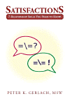

The Web address of this article is
http://sfhelp.org/relate/mates/no_time.htm
Updated
02-07-2015
Clicking underlined links here will open a
new window. Other links will open an informational popup,
so please turn off your
browser's popup blocker or allow popups from this nonprofit Web site.
If your playback device doesn't support Javascript, the popups may not display.
Follow underlined links
after
finishing this article to avoid getting lost..
This is one of a
subseries
of articles in self-improvement Lesson 4 -
optimize your relationships. This subseries focuses on
improving primary relationships. It adds to articles proposing how to make
three wise courtship decisions with and
without kids from prior unions.
This article proposes the real reasons many committed couples "can't find enough
time" to nourish their relationship, and what can be done to improve that.
It assumes you're
familiar with...
the
intro to this Web site and the
premises underlying it
Primary relationships range from
independent (I don't need you in order to live a satisfying life) to
interdependent (I don't
depend on you, and I choose to be with you) to
dependent (I can't live a
satisfying life without you). If a dependent person chooses an independent
mate, there can be significant conflict over "spending time together"
because their needs for that differ. Typical males have lower
needs for intimacy than females, with some exceptions.
As a family-systems therapist since 1981, I've
often heard troubled adults and couples with and without kids say
"We know we should find time for us and our relationship, but we
can't seem to do so." Such couples seem to be in an
impasse: one or both aren't getting some key
relationship needs met, and yet they
"can't find time" to fill these needs adequately.
If you seek a solution to this impasse,
then pause,
reflect, and say out loud the main reasons you partners "can't find enough
time" together.
I propose that the
reasons you cite probably aren't the reasons.Let me explain. When I hear "We can't find time for us...," I ask each
partner to meditate silently on two questions. Reflect
on them now...
"Recently, what are your top five
life priorities as judged by your actions, not your desires or words?"
"What would you say your mate's
recent top five priorities are, based on his or her actions?"
Then I ask the couple to compare their answers. Several themes
are common in their responses:
One or both mates can't describe
their specific
priorities; or...
Theirstated priorities
don't seem to match their recent choices and actions; or...
One or both partners significantly
misperceive the other's priorities, and express surprise or skepticism;
or...
One or both partners don't include
(a) personal
wholistic health (self-nurturance)
and/or (b) their primary relationship in their top
five priorities, and they
were unaware of that or make excuses for it; or...
One or both mates rank their
children's needs, career, debts, biological relatives, socializing, or something else
higher than their primary relationship; and...
Both partners agree they hadn't
recently discussed their immediate and long-range
priorities because "we're too busy," or "we haven't thought about them."
This two-question exercise explores...
how important the couple's
relationship is to each partner relative to other things in their lives,
whether their stated priorities match their actions, and...
how
aware they
are of their actual priorities, and what that means.
Note
your reactions to what you just read...
The Real Reasons
In this article, mates' "time together" means undistracted periods of
emotional and physical intimacy, which may include discussing
common interests and concerns, planning, worshipping, playing, and resolving relationship
problems
(unmet needs). It does not include doing domestic chores, socializing, parenting activities, watching media, or working together.
Premise: each mate can choose how to spend each 24 hours. So "We can't find time for us"
really means "I or we don't rank our relationship highly enough to makeenoughtime for it." That may mean that undistracted "time
together" doesn't yield enough pleasure to
motivate partners to seek more of it among their other interests and
responsibilities.
Why would mates who "fall in love" and vow to prize each other beyond all
others not want to make time to nourish and enjoy their relationship? Consider
these possibilities:
1)
One or both mates
inherited significant psychological
wounds,and
they (a) don't (want to) know this, or they (b) deny it to themselves or each other. The
worst case is one or both partners are unable to form a genuine
bond with the other
because of their wounds. This is often called being "emotionally
unavailable," and can produce "pseudo (pretended, dutiful) intimacy."
A common symptom of inner wounds is
one or both are unaware of
avoiding relentless
inner pain by being
compulsively busy (i.e.
addiction to activity),
and rationalizing that - e.g. "I have to, because (some illusion)," or
"I can't help it (I'm a helpless victim);"
This brief YouTube video overviews "Grown Wounded Children" (GWCs).
The video refers to 8 self-improvement lessons in this site: I've reduce
that to seven.
Another
common primary reason for too little time together is...
2)
Because of their wounds and unawareness,
one or both mates
committed to
the wrong
person, for the
wrong
reasons, at the
wrong
time - and
they don't want
to admit that to themselves or each other. One version of the former is
choosing a Grown Wounded Child who's intimacy needs are very different than
yours;
Another
primary reason is...
3)
The
couple doesn't know how to do effective
win-win
problem-solving yet,
so they avoid time together because they (a) have to pretend they have
no significant problems ("Maria and I never fight!"), or (b) they
feel increasing frustration at being unable to
solve theirproblemstogether;
and/or...
4) One or both partners feel
overwhelmed by a mix of current
problems (unmet needs), and need to avoid time together because
that usually increases stress; and/or...
5) One or both mates aren't
finished mourning prior
losses (broken bonds).Incomplete grief
can inhibit bonding and intimacy. Possibly the couple may not know how
to make a
pro-grief home and family that
patiently encourages healthy grief among its members; and/or...
6) Thecouple is in a financial situation where they
both choose to work at
jobs that leave little or energy time for their relationship. Where
true, this implies they value financial security and lifestyle more than
their relationship; and/or...
7) One or both
mates fear something about being alone together, like exposing secrets, excessive guilts, and/or discovering
serious relationship frustrations over sex,
love, trust, or other,
and they're unable to face that fear; and/or...
8)
The couple has not sought
effective help
to overcome problems like these, or they have chosen ineffective
consultant/s; and/or....
9)
Some combination of these
factors. This is probably the norm among America's millions of
divorcing couples.
Premise: "We can't
find enough time for ourselves as a couple"
avoids the pain of admitting "I
or we really don't care enough about our
relationship to (a) make time for it, and to (b) patiently learn how to
admit and resolve our problems together as committed partners."
Couples who tolerate "too
little time" to nourish their union need to see themselves as helpless
victims of "circumstances" rather than as partners with the option
and responsibility of
admitting and resolving their mix of the factors above. The lone exception is they cannot
undo making wrong commitment choices. This is specially tragic if they're
responsible for raising minor children.
Reality Check
See where you stand with what you just read. T = "True; F =
False, and ? = "I'm not sure," or "It depends on ____
(what?)."
If
you feel stymied trying to "find more quality time" together, consider
these...
Solution Options
Eight of the nine problems above can be
prevented or improved
if each partner has the will, courage, and resilience to learn how.The
order of the options below is important - each builds on the prior ones.
Underlined links below will take you to a new article. I suggest you finish this one
before reading any of them.
1) accept that to strengthen your primary relationship, each of you mates will have to want to...
adopt a
long-range attitude (e.g. the next 15+ years),
2) honestly define your real currentpriorities and who sets them. I
suggest you have the best long-term chance for relationship satisfaction and harmony if you
each
choose to put your
integrity and
wholistic health first, your relationship second, and all else third,
except in emergencies. If you can't agree on that, one or both of you
is probably controlled by a
well-meaning
false self.
Your most
impactful long-term option is to
evaluate whether you mates need to
reduce significant
psychological
wounds, and to
guard your kids against them.
Self-improvement Lesson 1 provides
a framework and many resources for this vital healing. Option: invest in this Lesson-1
guidebook together.
3) If
either of you is compulsively "busy" ("I just can't stop!") wonder if your
protective subselves are using that to avoid major
inner pain. Learn about
identifying and managing
addictions
in general, and
activity addiction in
particular. All harmful compulsions signify...
that a
false self dominates the
person and often her or his partner (a co-addict),
and...
probably s/he and any kids are living in a
low-nurturance family.
These have many major short and long-range
implications. If either of your
daily to-do lists are steadily over-full, discuss this
article for perspective, options,
and resources after you finish here.
4) Honestly evaluate whether either of you mates may have made
unwise commitment choices by reading thisand investing
time in using and discussing these
worksheets.
Any conclusion you reach can affirm your
choices, or clarify some important relationship and family decisions you need to
make for yourself and any dependents. If you feel you did make some wrong
commitment choices, that will affect which of these options can help you now.
More options to fill the primary needs underlying your "no-time" dilemma...
5) Read, discuss, and apply
these options to improve your
communication effectiveness. Self-improvement
Lesson 2provides
an organized way and many tools to
strengthen your effectiveness.
The unique, practical Lesson-2 guidebook isSatisfactions (Xlibris.com, 2002).To raise your
interest and motivation, try
digging down below the surface
problem of "too little time together" to see what unfilled
primary needs are causing your
discomfort.
6) A related option is to
map
your communication sequences when you do have time alone together. This can
reveal unseen communication
blocks
which may taint your alone-times.
be
able to communicate effectively (Lesson 2), and to...
help each other learn and apply
healthy grieving basics.
If you
two choose to invest time and patient effort in the options above, you'll be
increasingly able to reduce any of these common
relationship stressors that
contribute to your "no-time" dilemma. A way to optimize this is to help each
other (a) separate relationship problems from other personal and family issues,
and (b) stay focused on one or two problems at a time.
You're most apt to be
able to do that if your respective true Selves are steadily
guiding your
personalities.
If one
or both of you feel that money or debts
are a major reason you "can't" make time to enjoy each other, read and discuss
this article (later) and see what happens.
Another possibility is that one or both of you are c/overtly disappointed or
frustrated with the sexual part of your
relationship. If so, read and discuss this (later) for perspective and options. If one or both of you is
choosing to have an affair, see if
this opens up some options (later)
Notice
several themes in these options: they...
treat "too little tome together" as a symptom of some unfilled
primary needs;
are
not short-term quick fixes;
all
require you to invest significant time together, and be willing to
change some important
things about yourselves to get some things you want. And these options...
don't fault anyone for doing something "wrong;" and they...
follow a sequence (build on each other), And the options...
are proposed as two-partner efforts, not just
for one mate.
Recap
A common surface stressor in many primary relationship is one or both partners
complaining "We can't find enough time for our relationship." This article
proposes that this is usually a false-self delusion designed to avoid facing one
or more underlying primary problems.
The article proposes practical options to help partners identify and reduce
their primary problems, and strengthen their relationship over time. Doing this
is part of
Lesson 4 in this
self-improvement Web site.
Pause, breathe, and recall why you read this article. Did you get what you
needed? If so, what do you need now? If not - what
do
you need? Is there anyone you want to discuss
these ideas with? Who's
answering these questions - your wise resident
true Self,
or
''someone else''?